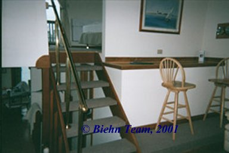

Curran's Houseboat
A Navy SEALs Biehn Team Exclusive
|
|
This is the houseboat's patio area where Curran, Hawkins and Claire devised a way to get a line on the Stingers. These are the stairs that Claire climbed when she boarded Curran's houseboat to find that he'd lost his best friend.  These stairs lead somewhere else...
A very nice couch. This is the wall that James Curran had covered in Post-It notes. Froggy is testing the comfort level of the couch!
My my... what green eyes you have Froggy... who looks a little too comfy in Curran's bed. |
© Biehn Team, 2001 |
© Disclaimer - it is not the intention of this site to infringe upon any copyright held by anyone to any of the materials presented. Any such materials presented are done so for the pleasure of Michael Biehn's fans, with no intent to cause any harm. No profits are made from this site and all work that goes into this site, its presentation and procurement of information is all performed by dedicated volunteers. When a copyright is not posted on an item, this simply means that we do not know to whom the copyright rightfully belongs. This does not mean that we assume copyright of that item. When an item is copyrighted to the Biehn Team, then that does mean that that item is owned by a member of the Biehn Team. If you "borrow" an item for use on your own web site, please link back to us.